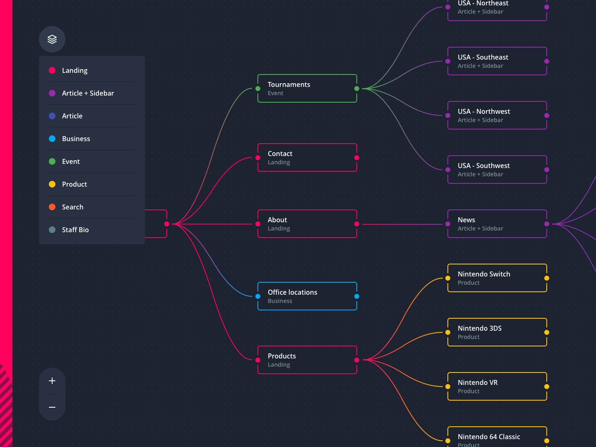

This is a website to display each technology using technology tree structure just like what people did in video game, but for the real world here.
Each physical elements or fundmantal law is marked as a technology node, which includes these elements:
Here we give a demo to explain how the tech-tree works:
When we get enough points, then the technology points can be constructured as below.
Author: Peide Zhang
Email: zhangpeides1@gmail.com